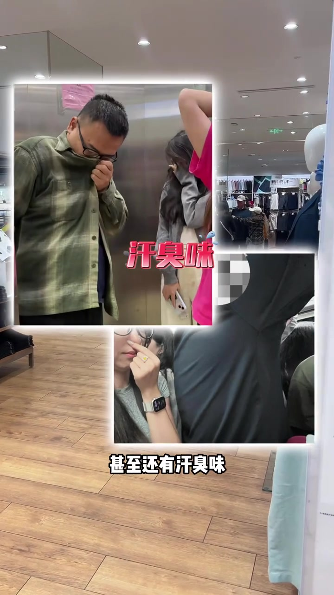
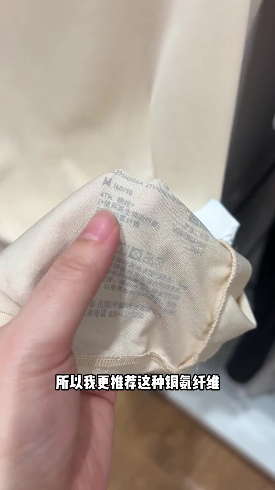
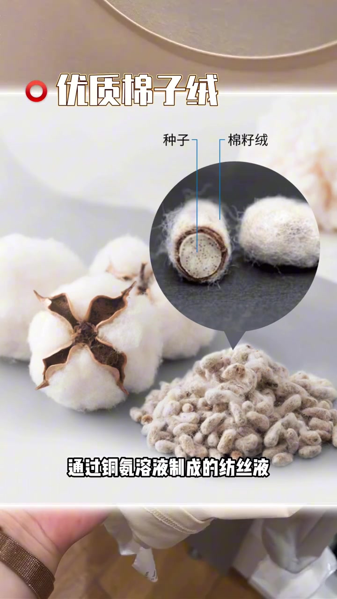
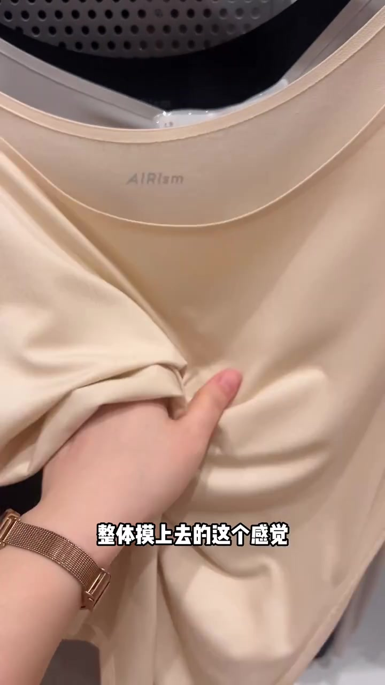
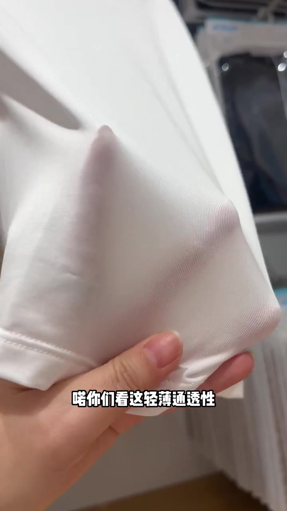
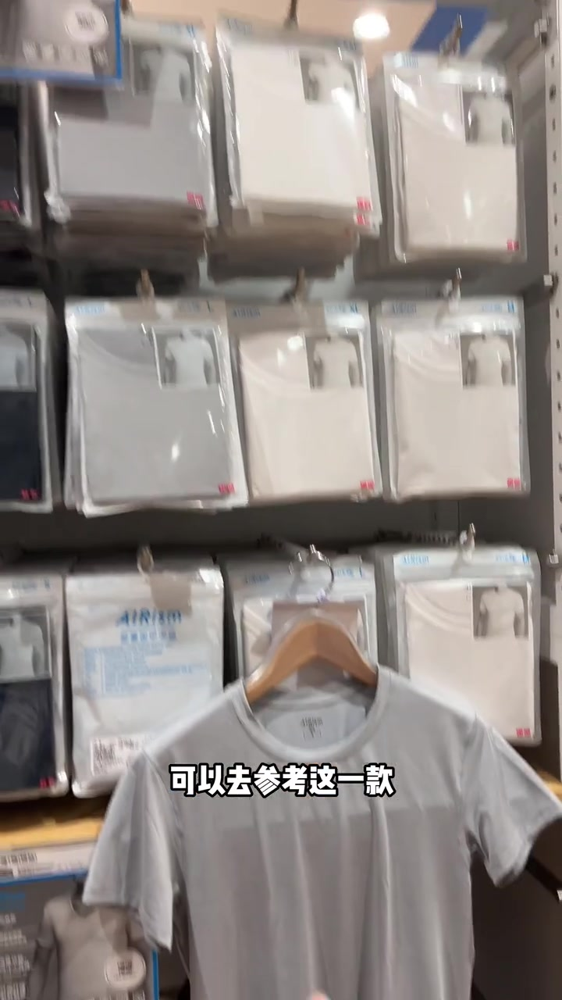
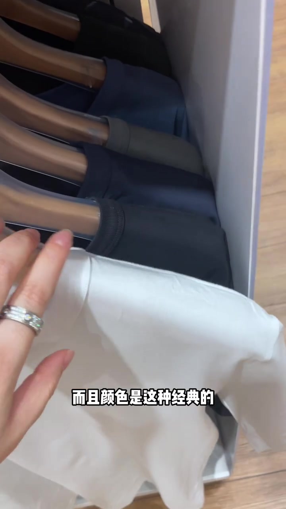
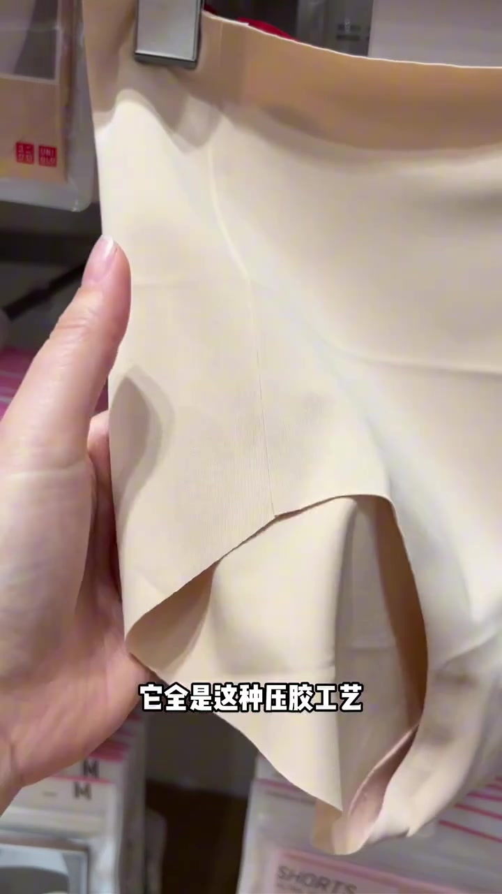

01
中文
一出汗衣服就贴在身上。
EN
Clothes stick to your skin the moment you sweat.
表达提示stick to（贴住）

Scene English · 穿搭 · 面料科普
How to Pick Summer Clothes and Avoid Sweat Embarrassment
🎧 语音讲解
Opening: Sweat Embarrassment
情境夏天太热，一出汗衣服直接贴身上，腋下后背汗湿一片甚至出汗味。选对面料才能避免这些尴尬。
一出汗衣服就贴在身上。
Clothes stick to your skin the moment you sweat.
表达提示stick to（贴住）
如何避免汗湿汗臭的尴尬。
How to avoid the awkwardness of sweat stains and odor.
表达提示sweat stains（汗渍）
用stick to换一种说法
用sweat stains换一种说法

The Cupro Fiber
情境真丝太贵，粘胶排汗性能差一点，推荐铜氨纤维：原料是优质棉籽绒，制成纺丝液再凝固纺丝。
铜氨纤维又叫铜氨丝。
Cupro fiber is also called ammonia silk.
表达提示cupro（铜氨纤维）
它既有粘胶的吸湿性又有丝的排汗性。
It combines the absorbency of rayon with the breathability of silk.
表达提示absorbency（吸湿性）
用cupro换一种说法
用absorbency换一种说法

The Fabric Feel
情境整体摸上去冰冰凉凉、非常丝滑，加上有一定紧致感，能起到速干效果。
摸上去冰冰凉凉很丝滑。
It feels cool and silky to the touch.
表达提示silky（丝滑的）
有一定紧致感能速干。
A bit of firmness helps it dry fast.
表达提示dry fast（速干）
用silky换一种说法
用dry fast换一种说法

Thin and Breathable
情境这种面料轻薄通透，运动穿、当内搭、甚至当睡衣穿都很合适。
它轻薄又通透。
It is thin and breathable.
表达提示breathable（透气的）
运动、内搭、睡衣都合适。
Great for workouts, layering, or pajamas.
表达提示layering（叠穿内搭）
用breathable换一种说法
用layering换一种说法

The Classic Quick-Dry Tee
情境经典款的纤维系统只有头发丝的十分之一，能快速把汗液导到面料上层蒸发掉。
纤维只有头发丝的十分之一细。
The fiber is a tenth the width of a human hair.
表达提示fiber（纤维）
快速导汗并蒸发掉。
Wicks sweat quickly and lets it evaporate.
表达提示wick（导汗）
用fiber换一种说法
用wick换一种说法

The Deodorizing Mesh
情境纤维自带消臭功能，能快速消解汗臭味，久洗久穿依然保持效果。
纤维自带消臭功能。
The fiber has built-in deodorizing.
表达提示deodorizing（消臭）
久洗久穿依然有效。
It stays effective wash after wash.
表达提示effective（有效的）
用deodorizing换一种说法
用effective换一种说法

The Cotton-Blend Option
情境想要挺阔一些就选棉混纺款，加了61%的棉，厚度刚刚好，可直接穿出门。
加了61%的棉更挺阔。
61% cotton makes it a bit more structured.
表达提示structured（挺阔的）
可以直接穿出门。
You can wear it out on its own.
表达提示on its own（单穿）
用structured换一种说法
用on its own换一种说法

Seamless Finish and Summary
情境内裤全是压胶工艺、没有走线，弹性大不勒、不夹屁股不卷边；AIRism 主打吸汗速干消臭凉感顺滑。
压胶工艺没有任何走线。
The bonded seams mean no visible stitching.
表达提示bonded seams（压胶接缝）
主打吸汗速干消臭凉感。
It focuses on wicking, quick-dry, deodorizing, and coolness.
表达提示quick-dry（速干）
用bonded seams换一种说法
用quick-dry换一种说法
夏天选衣服想避免汗湿尴尬，怎么说？
铜氨纤维又吸湿又排汗，怎么说？
这种面料摸起来很丝滑，怎么说？
纤维自带消臭功能。
好看但闷汗会带来社交尴尬
真丝贵且排汗不如铜氨
不同场景需要不同的厚度与挺阔度
有走线会勒、会卷边